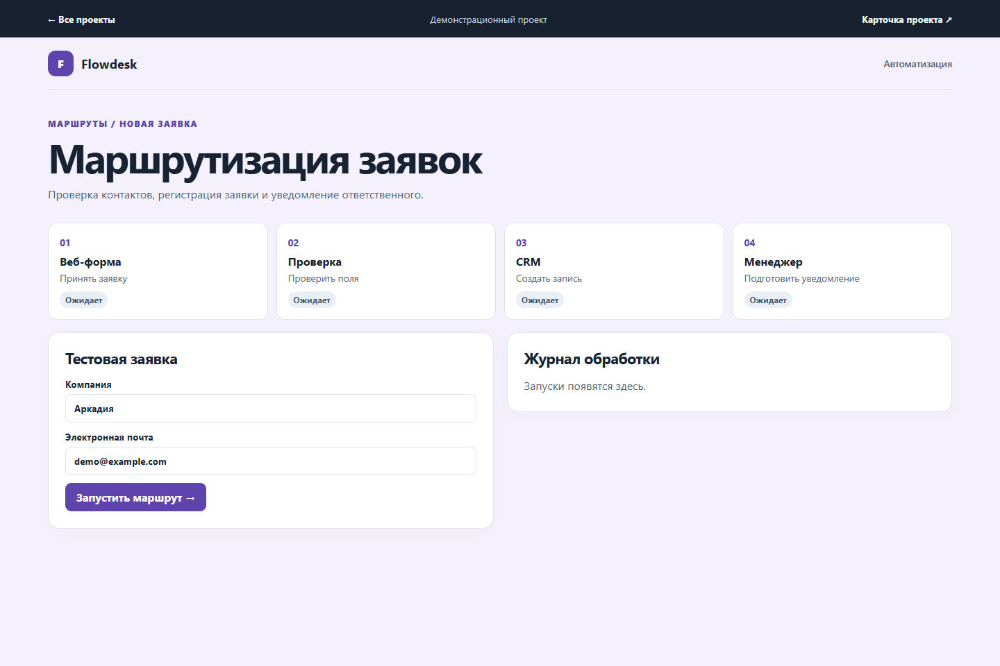
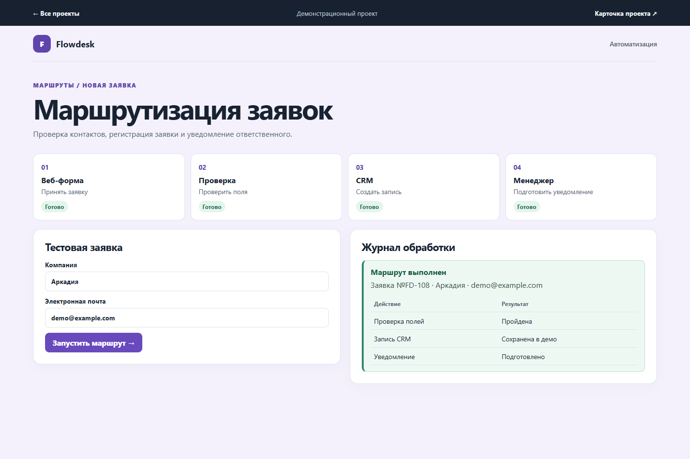

Автоматизация / Демонстрационный проект
Маршрутизация заявок
Заявку нужно проверить, зарегистрировать и передать ответственному.
Что реализовано
Собрал редактируемую тестовую заявку, цепочку обработки и журнал с результатом каждого шага.
Что показать клиенту
Запустите маршрут. Можно очистить контакты и проверить обработку ошибки.


Проект работает в браузере на тестовых данных. Сторонний аналог на GitHub ↗

